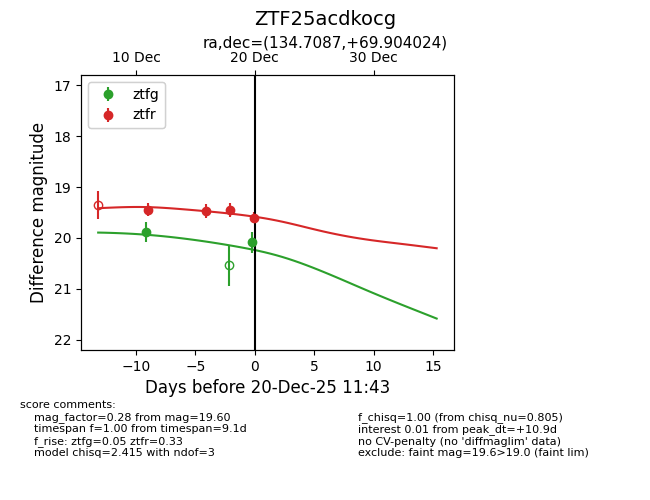
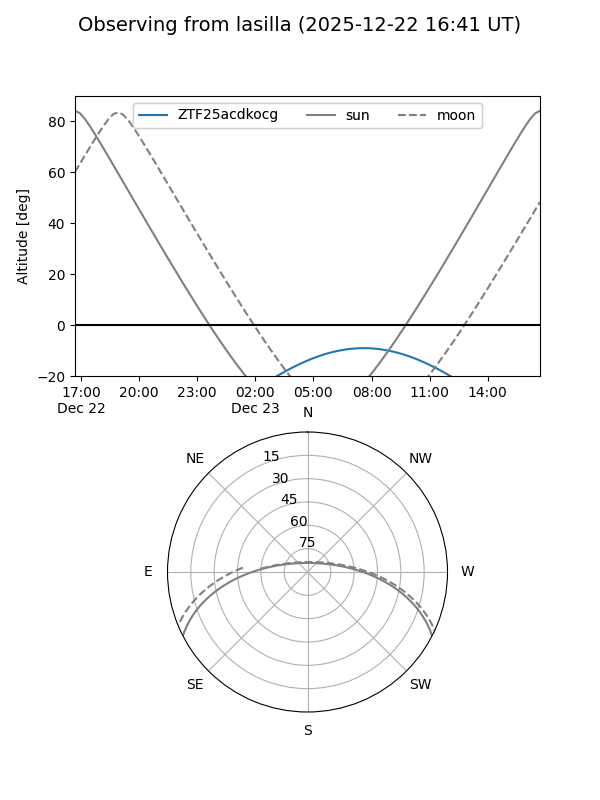
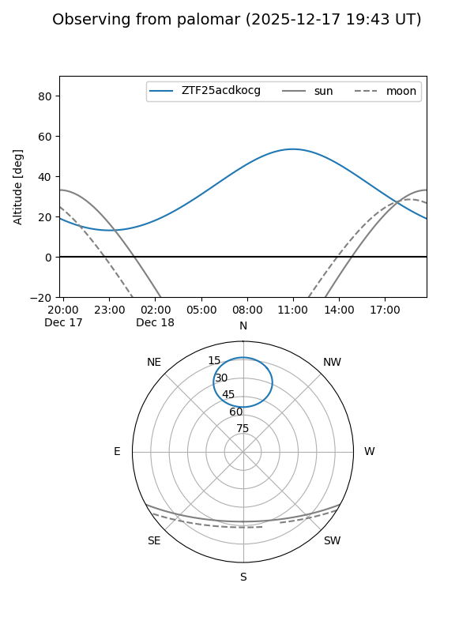
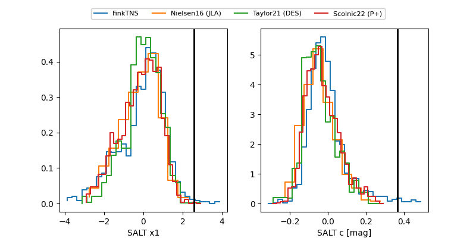

ZTF25acdkocg
Target ZTF25acdkocg at 2025-12-20 11:44
Aliases and brokers:
FINK: fink-portal.org/ZTF25acdkocg
Lasair: lasair-ztf.lsst.ac.uk/objects/ZTF25acdkocg
ALeRCE: alerce.online/object/ZTF25acdkocg
alt names
ZTF25acdkocg (ztf,fink_ztf)
Coordinates:
equatorial (ra, dec) = 134.7087,+69.90402
equatorial (HMS+DMS) = 08:58:50.10,+69:54:14.49
galactic (l, b) = (144.1149,+36.12766)
Flags:
Photometry:
last ztfg=20.08, ztfr=19.60
2 ztfg, 4 ztfr detections
Lightcurve

Visibility


Additional plots
